Europae Laeva
One Europe, for the many.
- Leaked Deutsche Bank files show $582m in flagged Epstein transactions
- Genesis AI raises $500 million to produce its Eno robot, with Bpifrance among the backers
- An asteroid shield is common defence. Fund it from the Union.
- Easier food exports, linked carbon markets, a youth scheme: Burnham's three asks in Brussels
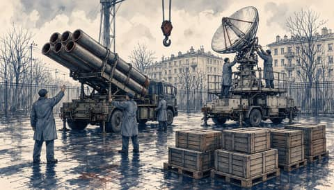
Kyiv expects European-Ukrainian Freyja missile shield this winter
The Harbour Ledger
News from the quay up.
 Drone hits cargo ship near Romania, crane damaged, no one hurt
Drone hits cargo ship near Romania, crane damaged, no one hurt- Europe gets a seat at the next Ukraine talks, but not the deal
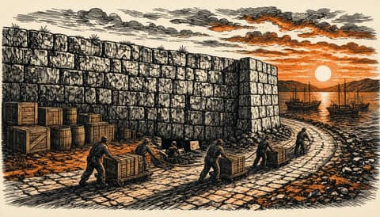
EU sanctions cut Russia trade to 58 billion euros but enforcement lags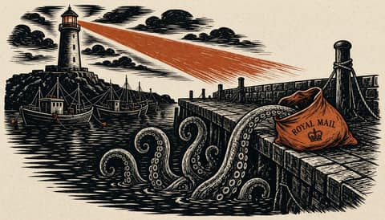
Launch the Black Sea mission while Turla sits in government mail French cyber agency blames Iran's Revolutionary Guard for shop fridge attack
French cyber agency blames Iran's Revolutionary Guard for shop fridge attack
Attacotti
Scotland's way home runs through Europe.
Europa Surgit
Europe is rising. Keep up.
- If Europe pays for Ukraine's defence, Europe should build it
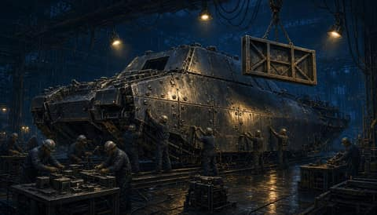
US envoys say Europe wins seat at Ukraine peace talks as Berlin meeting set- Finnish satellite firm ICEYE bids €41 a share to take Italian rocket maker Avio off the stock market
- Outside costs Britain €3.6 to €4.2 billion a week. Sign the deal.
- Ukraine's missiles work. Now Europe should order them.
Nuntii Europae
News from a European perspective.
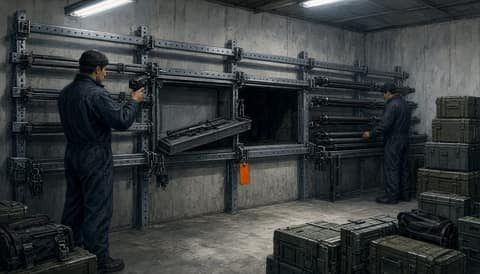
Two rifles missing from Belgian Defence stock, minister confirms Le Pen tells Ukraine's ambassador she would end new financial aid to Kyiv
Le Pen tells Ukraine's ambassador she would end new financial aid to Kyiv Ukraine strikes Crimean bridge with drones as Russia reports record drone interceptions
Ukraine strikes Crimean bridge with drones as Russia reports record drone interceptions- GPS jamming suspected as seven aircraft lose position guidance over Schiphol
- Drone strikes cargo ship in Romanian waters, defence minister confirms no injuries
Nuntii Batavi
The Netherlands, between The Hague and Brussels.
Limes
Where Europe is held.
Nothing published yet.
Leo Batavus
The Netherlands decides.
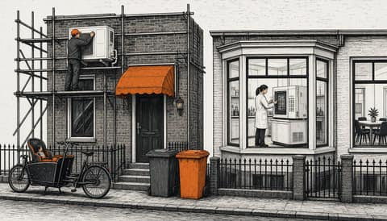
Dutch government calls US chip export bill unacceptable- GPS jamming suspected after seven aircraft lose signal at Schiphol
 Nordic defence ministers agree to develop a joint defence agreement
Nordic defence ministers agree to develop a joint defence agreement EU auditors say uneven enforcement blunts Russia sanctions
EU auditors say uneven enforcement blunts Russia sanctions- French minister Barrot calls Mélenchon a spokesman for the Kremlin
Europae Dexter
A sovereign Europe, argued plainly.
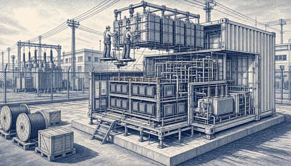
Italy can count its batteries. It cannot pay for the next million.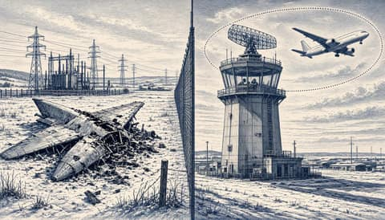
Moldova protests to Moscow over drones entering its airspace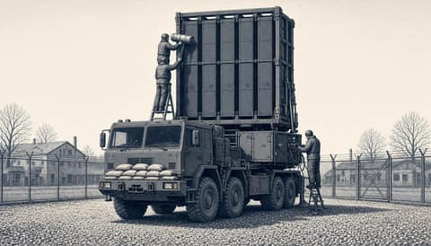
US tells Europe to fund Ukraine's arms and says deep strikes are not ending the war- Zelensky offers to trade future missiles for Patriot interceptors now
- Deutsche Bank planned Russia expansion before the invasion despite warnings, leaks show
Europa Patriarum
A Europe of nations.
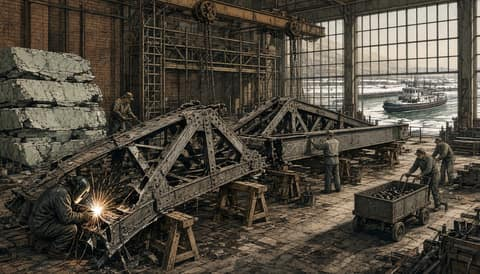
US envoys head to Berlin for Ukraine talks as Europe's seat at the table stays disputed- Drone hits cargo ship MV Larissa 1, no injuries reported
 Ukraine strikes Volgograd refinery as analyst says 55% of Russian gasoline output is down
Ukraine strikes Volgograd refinery as analyst says 55% of Russian gasoline output is down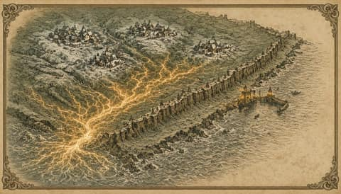
France blames Iran's Revolutionary Guard for cyber attack on 700 retail sites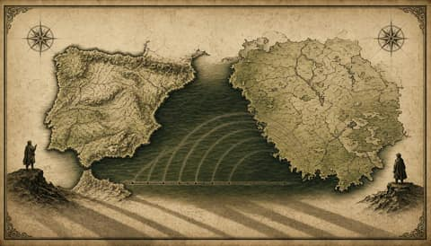
Portugal rebukes NATO chief Rutte over 'flippant' missile remarks
Acta Diurna
The day's news.
Nothing published yet.